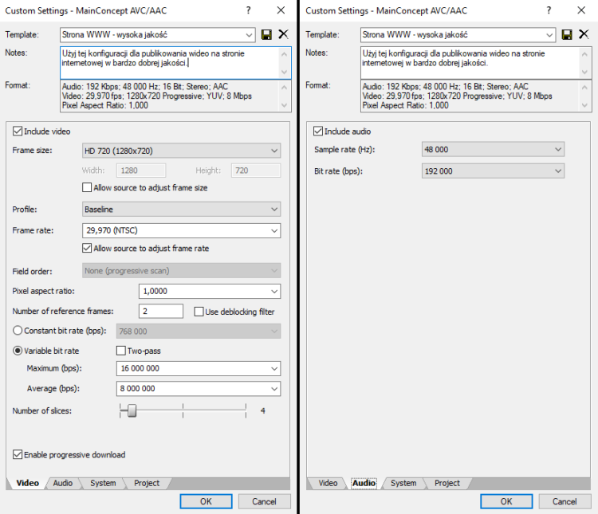

Korzystanie z serwisów do publikowania wideo Zaletą korzystania z serwisów zewnętrznych do hostowania i udostępniania klipów filmowych jest przede wszystkim wygoda i automatyzacja pracy związanej z konwersją na wiele formatów. Korzystanie z YouTube polega tak naprawdę na przesłaniu materiału wideo w dowolnym formacie, a konwersja tego pliku i jego publikacja dzieje się sama. Drugą zaletą może być fakt, że od razu nasz film jako treść pojawia się w wyszukiwarce YouTube, dzięki czemu odsetek użytkowników trafi na niego wprost z niej i zapozna się z naszym materiałem. Zalety korzystania z zewnętrznych serwisów do publikowania wideo to: automatyczna konwersja wideo do przyjaznych formatów na niemal wszystkie urządzenia, oszczędność zasobów serwerowych (miejsce i transfer), możliwość tworzenia napisów i adnotacji, dywersyfikacja – rozwój kanału w serwisie zewnętrznym. Zasadniczą wadą takiego rozwiązania jest permanentna utrata pewnych praw do filmów.
Tak naprawdę, przeglądarki nigdy nie wspierały ani nie wspierają użycia pliku wideo w tle elementu HTML (wyłączając gify, webp i cuda w SVG). Każdy sposób umieszczenia klipu wideo w tle strony bazuje na sztuczce polegającej na tym, że ten standardowy odtwarzacz rozmieszczamy w taki sposób aby było wrażenie odtwarzania w tle. Wykorzystując wspomniane wyżej atrybuty i podstawową wiedzę z kodowania CSS stwórzmy element div, który odtworzy wideo w tle:
Filmy i wideo też możemy optymalizować dla potrzeb SEO. Możemy użyć:
Dzięki temu programowi można skonwertować różne formaty wideo: https://convertio.co/pl/document-converter/
MP4 to tak naprawdę grupa standardów kodowania audio i wideo. MP4 to też następca kodowania MPEG. Jest to obecnie szeroko wspierany format pozwalający osiągnąć zadowalającą jakość obrazu i dźwięku a ustawienia kodeka umożliwiają bardzo oszczędny zapis. Format kontenera MP4 z kodekiem wideo H.264 i kodekiem audio AAC jest natywnie obsługiwany przez wiele przeglądarek w tym Internet Explorer, Safari i Chrome. Internet Explorer i Chrome obsługują również kodek audio MP3 w kontenerze MP4, ale już Safari nie. Firefox obsługuje format w niektórych przypadkach, ale tylko wtedy, gdy dostępny jest dekoder innej firmy, a sprzęt urządzenia może obsłużyć profil używany do kodowania MP4.
Zalety formatu MP4
Typy MIME dla plików MP4
WebM - Zapis do tego formatu jest możliwy w większości programów do obróbki wideo. W przypadku braku takiej możliwości zawsze można wykorzystać liczne konwertery choćby dostępne online. Format WebM to format otwartego standardu, który rozwija Google (tak jak w przypadku zdjęć WebP). W tym momencie temat selekcji odpowiedniego formatu dla stron internetowych mógłby być zakończony a pozostałe zalety kodeka Matroska i formatu WebM to:
Typy MIME dla plików WebM:
Ogg Theora Vorbis - format kontenera Ogg z kodekiem wideo Theora i kodekiem audio Vorbis jest obsługiwany w przeglądarkach: Firefox, Chrome i Opera, a obsługę tego formatu można dodać do Safari (ale niestety nie na iOS), instalując dodatek. Format nie jest w żaden sposób obsługiwany w przeglądarce Internet Explorer
Wadą formatu Ogg Theora Vorbis jest niestety gorszy stosunek kompresji do jakości i mniejsza kompatybilność – nie jest tak szeroko wspierany jak MP4 i WebM. Bardzo dużą zaletą formatu Ogg jest to, że może jednak służyć do obsługi starszych wersji przeglądarek.
Typy MIME dla plików Ogg:
Tak jak w przypadku zdjęć, rozmiar obrazu wideo znacząco wpływa na postrzeganą jakość obrazu i jego rozmiar pliku. Może być ona teoretycznie dowolna, jednak zarówno w technice audio/wideo jak i w przypadku stron internetowych, po upowszechnieniu się stosunku 16:9 znane są cztery często spotykane rozdzielczości:
Kolejnym tematem jaki trzeba zrozumieć przy publikacji własnego wideo na stronie internetowej jest bitrate. Bitrate pod kątem funkcjonalności przypomina „stopień kompresji” lub jakość jaką ustawia się przy konwersji grafiki na poszczególne formaty graficzne. W przypadku wideo (a także audio), ostateczny rozmiar pliku jest na tyle istotny, że osobie, która zajmuje się kompresją pozwala się określić jaki rozmiar ma mieć średnio pojedyncza sekunda filmu. Dzięki temu można określić jakość wideo niejako od tyłu, ponieważ z góry wiadomo jaki będzie rozmiar pliku o zadanej długości ale nie wiemy jak wyraźny będzie obraz. Im większy bitrate, tym większy rozmiar pliku i szansa, że wyjściowy materiał będzie wysokiej jakości. Jednocześnie, zbyt wysoki bitrate zwiększa ryzyko, że po prostu zmarnujemy niepotrzebną przestrzeń a poprawa jakości nie będzie miała znacznego wpływu na subiektywne wrażenia osoby oglądającej wideo. Im niższy bitrate, tym mniejszy rozmiar pliku i ryzyko tego, że wyjściowy materiał będzie się charakteryzował zbyt małą ostrością i szczegółowością. Jednocześnie, zwiększamy szansę, że zaoszczędzimy wiele miejsca zachowując w miarę dobre wrażenia z oglądania.
Ilość klatek na sekundę determinuje wrażenie płynności animacji obrazu w wideo. Wykorzystując fakt, że wiele monitorów i telewizorów nadal pracuje w standardzie 30k/s, większość wideo (jakie można znaleźć w Internecie) serwuje zazwyczaj klatkaż na poziomie ok. 29,97 klatek na sekundę. Od jakiegoś czasu YouTube i P***hub zdecydowali się na wsparcie odświeżania 60 klatek na sekundę – to już jest bardzo dużo i nie ma sensu śrubować tego wyniku jeżeli wideo jest przeznaczone do oglądania w standardowej prędkości.
